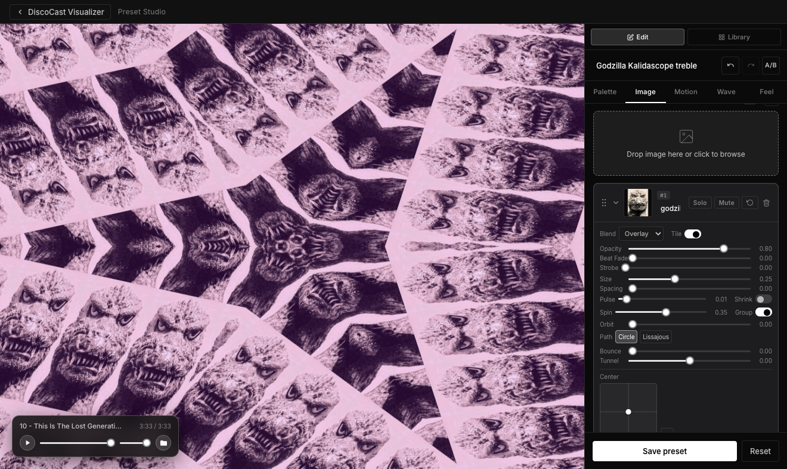
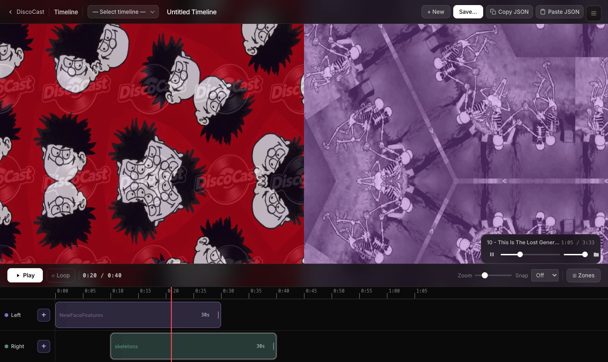
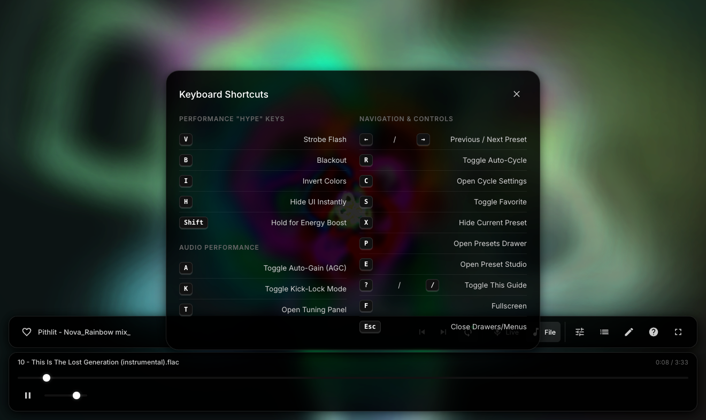

Your music,
actually visible.
DiscoCast is a real-time MilkDrop visualizer for macOS. It ships with 1,144 presets, a custom preset studio with image layers, and a timeline editor for sequencing shows.
This is an early beta build — the core visualizer, preset browser, and studio are solid, but the Timeline Editor (still actively being built) is a work in progress.
Quick tip: When you are in the Preset Editor remixing a preset not all sliders work if the setting is not in the preset or the setting is very subtle. Different presets have different reactions to different sliders. Image layers have their own separate settings in the Image tab of the Preset Editor
Latest additions: Motion Audio Reactivity for MilkDrop presets (Pulse, Bounce, Shake, Beat Fade, Strobe)
Animated GIF layers with speed control, Alpha Mode, and timing smoothing
Per-layer Saturation and Hue Rotate
Radius — rounded corners on image tiles
Windows build
Bug fixes
Send feedback to paul@rarefunk.com.
Current release is Beta May 05, 2026. Send me your email if you want notice of app updates.
Your feedback helps shape the public release.
DiscoCast is a real-time MilkDrop visualizer for macOS. It ships with 1,144 presets, a custom preset studio with image layers, and a timeline editor for sequencing shows.
Over 1,100 reactive visuals, a full preset studio with deep per-layer animation controls, a timeline editor for planning shows, and live performance tools — all in one app.
The full Butterchurn library plus the community-curated Baron pack — all bundled locally, no network calls needed.
Mic, USB DJ controller, external sound card — pick your device from a native dropdown and the visuals follow whatever you're playing.
AGC keeps visuals consistently punchy regardless of volume. Kick-Lock isolates the low end so everything locks to the kick drum.
Screen Wake Lock, auto-hiding cursor, and Zen Mode (H key) for zero-UI projection. Built for live events and installations.
Stream the visualizer canvas directly into OBS, Zoom, or any app that accepts a webcam. No extra drivers — one toggle in the app.
Searchable drawer across all 1,144 presets. Heart your favorites, hide the ones you don't want, and cycle only through the good stuff.
Drop any animated GIF straight into a preset layer. Perceptual speed control (0.25×–8×), Alpha Mode for silhouette cutouts, and timing smoothing for choppy source files.
Upload-time tool for large animated GIFs. Shows frame stats, keeps every Nth frame, resizes, and calculates GPU savings — all before adding to your preset.
Lock the render canvas to HD / Full HD / QHD / 4K or a custom size. Set aspect ratio and fill mode (Letterbox / Stretch / Crop) independently.
One-key strobe, blackout, and color inversion. Hold Shift for a 2× intensity boost. Fast enough for live DJ sets.

Build custom presets from scratch with a live canvas and a tabbed inspector. Pick a palette, shape the motion, then add your own images and wire every layer to the music independently.
Upload your own photos, textures, or artwork and composite them into the scene in real-time. Each layer has a full independent animation and effects pipeline — motion, transforms, audio reactivity, color, and blending — so you can build complex visuals that move and react exactly how you want.

Arrange presets on a multi-track strip, set durations and blend times, then hit play. The Zone Compositor lets you run multiple presets in different screen regions simultaneously — each with its own opacity and blend mode.
.dcshow.json bundle — custom presets and
images travel with the file
Every preset you build — including image layers — can be exported to a single file and imported on any machine running DiscoCast. No cloud, no sync, no lost work.
Export a single preset or your entire library as a .json file. Images are embedded as base64 —
open the file on another Mac and everything is exactly as you built it.
Export a timeline as a .dcshow.json bundle. All custom presets and their images are embedded —
hand the file to another DJ and they can run your exact show.
After any import, a modal lists exactly what was restored by name — and flags anything that didn't make it, with the reason why.

The whole UI is designed to stay out of your way — glassmorphic controls auto-hide after 3 seconds, and every action has a keyboard shortcut. No menus to dig through.
Free download for macOS and Windows. Mac users: open the .dmg, drag the app to Applications. Windows users: unzip and run the .exe.